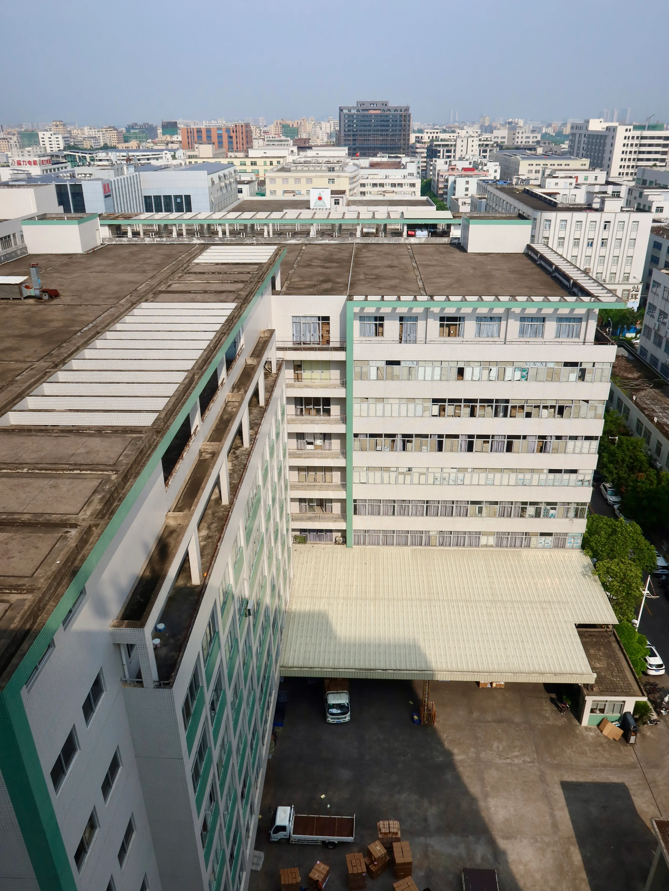

Manufacturing · OEM · ODM
From product brief to export-ready production
Development coordination, tooling, molding, assembly, inspection, packaging, and shipment preparation through one practical workflow.
Stable production, ready for international projects
Own manufacturing in Shantou combined with experienced OEM and ODM support for international retailers, licensed brands, and global markets.

Six controlled stages from brief to shipment
Every stage closes with a clear deliverable or approval, keeping cost, timing, product quality, and export requirements aligned.
-
Project brief
Target market, function, price, quantity, packaging, timing, and compliance.
Approval · Commercial brief -
Engineering review
Materials, construction, process, cost, factory route, and feasibility.
Approval · Technical route -
Tooling & sampling
Tool development, prototype testing, refinement, and client confirmation.
Approval · Golden sample -
Production
Material preparation, molding, decoration, assembly, and packing.
Control · Schedule & specification -
Quality release
Pre-production, in-line, and pre-shipment inspection checkpoints.
Approval · Inspection result -
Export preparation
Final cartons, documents, consolidation, loading, and shipment coordination.
Outcome · Export-ready order
3-stage quality control
Checks follow the order, not just the final carton.
- 01Pre-productionMaterials and approved sample
- 02In-lineProcess, assembly, and consistency
- 03Pre-shipmentQuantity, packing, and release
A showroom built for range selection
Our showroom helps buyers review products, compare categories, build ranges, and discuss development opportunities with our team.


Production and quality control in operation
From manufacturing processes to final packing, our team follows the approved product specifications and quality requirements at every stage.